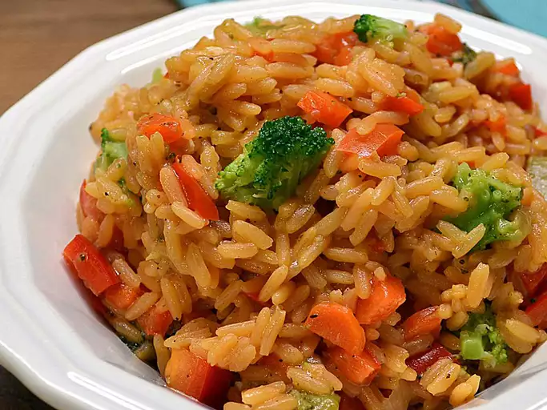

Rice with vegetables

A great and healthy rice recipe
This is a great, healthy and very easy to prepare rice recipe from the Spanish cuisine.
Whenever you need a very easy and fast to do recipe, with cheap and available ingredients, with a
soft taste and very energizing, this is the perfect recipe to think on. So get ready and prepare yourself
for a gratifying experience enjoying this spanish cuisine recipe.
Ingredients
- 1 teaspoon vegetable oil
- 1 small onion, chopped
- 1 medium carrot, diced
- 1/2 cup chopped broccoli florets
- 1/4 cup diced red bell pepper
- 1 clove garlic, minced
- 3 cups vegetable broth
- 1 1/2 cups rice
- 1 package sazon seasoning
- 1 pinch adobo seasoning with pepper
Steps
- Heat oli in a saucepan over medium heat.
- Add onion, carrot, broccoli, bell pepper and garlic.
- Cook and stir until vegetables soften and garlic just begins to brown.
- Stir in broth, rice, sazon seasoning and adobo seasoning, bring to a boil.
- Reduce the heat to low and cook until liquid is absorbed and rice is tender.
- Fluff rice with a fork to serve.